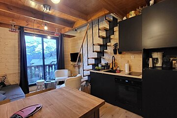

Le fil des nouveautés
Les informations seront partagées ici
Laurent et Viviane mettront cette rubrique à jour au fil des évolutions de l’appartement, pour que vous disposiez des informations les plus récentes avant et pendant votre séjour.
Un séjour au cœur des Deux Alpes
Un appartement au cœur de la station, pensé pour profiter pleinement de la montagne et se sentir chez soi.
La vie de l’appartement
Retrouvez ici les changements apportés au logement : nouveaux équipements, aménagements et informations pratiques.
Le fil des nouveautés
Laurent et Viviane mettront cette rubrique à jour au fil des évolutions de l’appartement, pour que vous disposiez des informations les plus récentes avant et pendant votre séjour.
Mot de bienvenue
Nous sommes ravis de vous accueillir dans notre appartement, situé au cœur de la station des Deux Alpes. Nous espérons que vous passerez un séjour inoubliable, entre paysages enneigés, sports de glisse et moments de détente.
Nous sommes ravis de vous accueillir dans notre appartement, situé au cœur de la station des Deux Alpes. Nous espérons que vous passerez un séjour inoubliable, entre grands espaces, balades en montagne et moments de détente.
Ce livret a été conçu pour vous faciliter la vie pendant votre séjour. Vous y trouverez toutes les informations pratiques concernant le fonctionnement des équipements, les bonnes adresses du coin, ainsi que les règles de la copropriété pour que tout se passe au mieux.
Si vous avez la moindre question ou besoin de recommandations particulières, n'hésitez pas à contacter la conciergerie ou à nous laisser un message.
Nous vous souhaitons un excellent séjour aux Deux Alpes !
Chaleureusement, Laurent et Viviane
L’esprit des 2 Alpes
La photo affichée s’adapte automatiquement à la saison du moment.
À découvrir
Quelques repères visuels pour vous projeter dans votre séjour aux Deux Alpes.

Arrivée
Quatre repères pour vous installer sans attendre.
Vérifiez l'état de la route avant de partir et prévoyez chaînes ou pneus neige. Une question sur l'accès ou l'heure d'arrivée ? Écrivez-nous à l'adresse en bas de page.
La route de montagne comporte beaucoup de virages : prévoyez du temps pour la montée. Une question sur l'accès ou l'heure d'arrivée ? Écrivez-nous à l'adresse en bas de page.
À l'entrée de la résidence, juste à côté de la barrière, se trouvent les conteneurs (moloks) pour vos poubelles.
Le placard à skis est à votre disposition au niveau des garages pour ranger votre équipement en sécurité. Vérifiez bien sa fermeture après chaque utilisation.
Le placard à skis est à votre disposition au niveau des garages pour ranger votre équipement en sécurité. Vérifiez bien sa fermeture après chaque utilisation.
Le Wi-Fi est en haut de page, avec un QR code à flasher affiché dans l'appartement. Le guide des appareils juste en dessous explique tout, du lave-vaisselle à la télé.
À l’arrivée
À cocher dès votre arrivée pour vérifier que tout est prêt.
0 sur 5 faits
Placard à skis au niveau du garage
Rangement des skis
Le placard à skis est à votre disposition au niveau des garages de la résidence. Vérifiez bien sa fermeture après chaque utilisation.
Le placard à skis se trouve au niveau des garages de la résidence. Vérifiez bien sa fermeture après chaque utilisation.
Votre équipement de ski peut être rangé en toute sécurité dans le placard à skis au niveau des garages.
Votre équipement peut être rangé en toute sécurité dans le placard à skis au niveau des garages.
Vérifiez bien la fermeture du placard à skis après chaque utilisation, pour garder votre matériel en sécurité.
Équipements
Choisissez un appareil. Chaque fiche tient en quelques lignes.
Mode de cuisson, bouton de gauche :
Les températures sont préréglées de façon optimale. Merci de ne pas modifier les réglages.
Copropriété et bonnes manières
Inventaire
Pièce par pièce, pour que chacun sache où chercher et ce qui doit rester sur place.
Cet inventaire a été réalisé avec soin avant votre arrivée. En cas de casse ou d'élément manquant, merci de le signaler rapidement à la conciergerie ou aux propriétaires.
Les 2 Alpes
Quelques repères pour organiser vos journées.
Le Jandri Express est la grande télécabine de la station. Vérifiez les horaires d'ouverture la veille.
Aux caisses des remontées mécaniques ou en ligne. Prenez-les dès la veille pour partir tôt.
Skis, snowboard, casque. En vacances scolaires, réservez à l'avance.
Ouverture selon les dates de l'été : vérifiez les horaires avant de partir.
Vélos et protections à louer sur place. Réservez en juillet et août.
Sentiers balisés au départ de la station. Emportez de l'eau et une veste, il fait frais en altitude.
Boulangerie et supérette en centre-station. Faites vos courses avant la fermeture du soir.
Réservez le soir pendant les vacances scolaires.
Pour un accident en montagne, appelez le 112.
Plan officiel
Repérez les parkings, les navettes, les remontées, les commerces et les différents secteurs de la station.
Le plan officiel bloque l’affichage intégré dans cette page. Il s’ouvre en toute sécurité dans un nouvel onglet.
Ouvrir le plan →En direct
Consultez les informations officielles avant de sortir : météo, webcams, neige et ouvertures.
Mon séjour
Une petite checklist pratique à cocher chaque jour. Elle est enregistrée sur cet appareil.
0 sur 7 faits
Assistance
Choisissez le type de problème et préparez un message pour la conciergerie.
À utiliser en cas de besoin
Pour une urgence vitale, appelez directement le 112 ou le 15. Pour un incident sur les pistes, contactez les secours via le 112.
Votre avis
Votre séjour s'est bien passé ? Dites-le aux prochains voyageurs.
Choisissez une catégorie, laissez votre note et enregistrez votre commentaire. Le formulaire reste discret pour ne pas surcharger la page.
FAQ
Le nom du réseau et le mot de passe sont en haut de cette page. Vous pouvez aussi flasher le QR code affiché dans l'appartement.
Au placard à skis, au niveau des garages. Vérifiez bien sa fermeture après utilisation.
Un placard à skis est à votre disposition au niveau des garages pour votre équipement. Vérifiez bien sa fermeture après utilisation. Si vous avez besoin de plus de place, écrivez-nous.
Comptez 2 à 3 heures après la skiade, idéalement sur les heures creuses : de 1 h 10 à 6 h 40 ou de 14 h 40 à 17 h 10. Ne modifiez pas les réglages de base de la minuterie.
Quand vous voulez. Pour économiser l'énergie, programmez-le sur les heures creuses : de 14 h 40 à 17 h 10 ou de 1 h 10 à 6 h 40. Le programme recommandé est P1 Eco.
Oui, les chiens de moyenne et petite taille. Ils n'ont pas le droit de monter sur les lits et les canapés.
Dans les conteneurs (moloks) à l'entrée de la résidence, juste à côté de la barrière. Videz les poubelles de l'appartement avant votre départ.
Non, le ménage de fin de séjour est compris dans le prix. Laissez simplement l'appartement dans un état convenable et videz les poubelles.
Signalez-le rapidement à la conciergerie ou aux propriétaires, par message. Cela évite tout malentendu à la fin du séjour.
Oui. En zone de montagne, pneus hiver ou chaînes sont obligatoires du 1er novembre au 31 mars. Vérifiez l'état des routes avant de partir.
La conciergerie (Christophe Auje) ou les propriétaires, Laurent et Viviane, par e-mail. Pour une urgence, voyez les numéros en bas de page.
Départ
Le ménage est compris. Il reste quelques gestes, cochez-les au fur et à mesure.
0 sur 5 faits